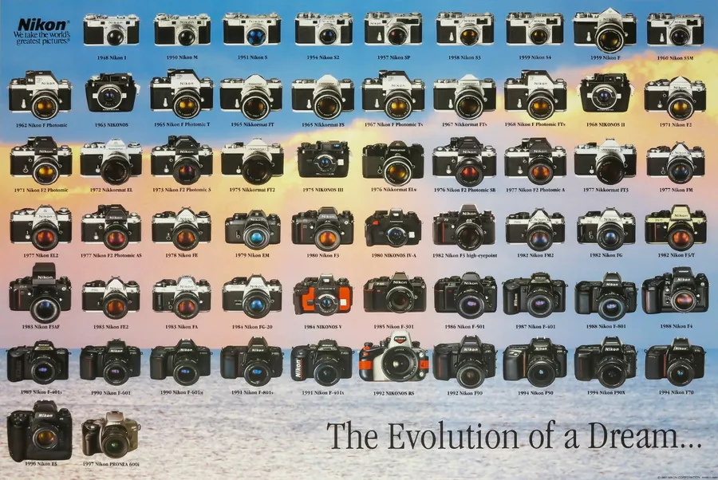
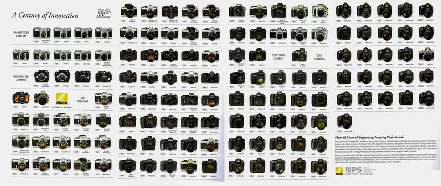
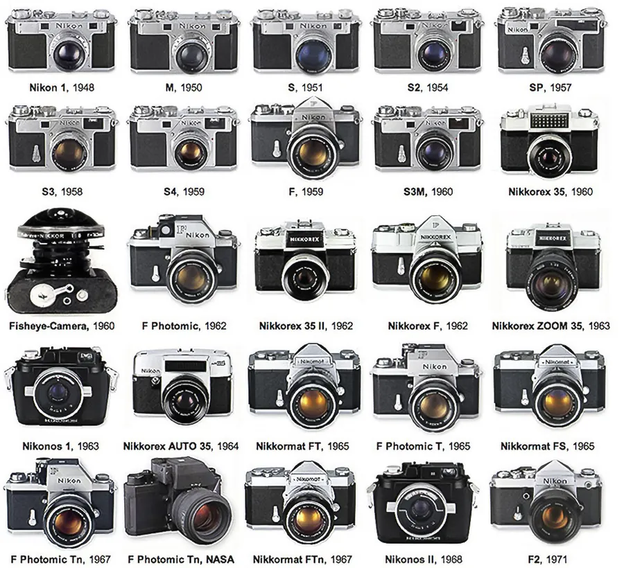
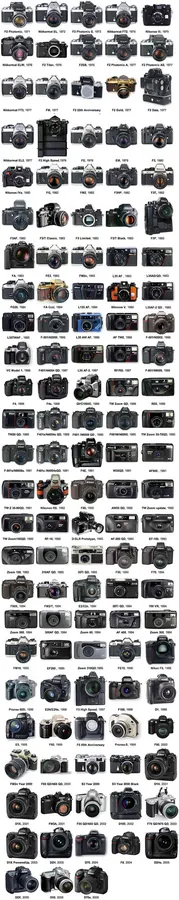

Przejdź do treści
Zenbliski
Menu
Archiwalne
Analogowe
Kolekcja
Akcesoria foto
Materiały reklamowe
Artykuły – blog
Foto ciekawostki
Cyfrowe
Materiały reklamowe
Foldery i prospekty
Nikon Historia, angielski




Poprzednia
Nikon FE2, 1983 r., niemiecki
Następna
Nikon – 32 fotocamere per scegliere il meglio, 1993 r., włoski